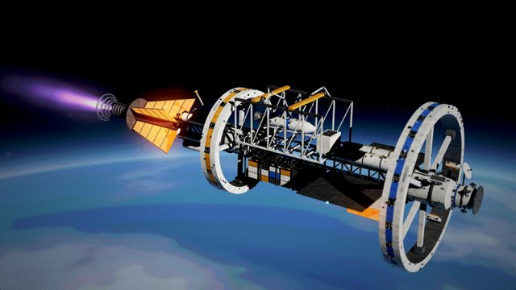
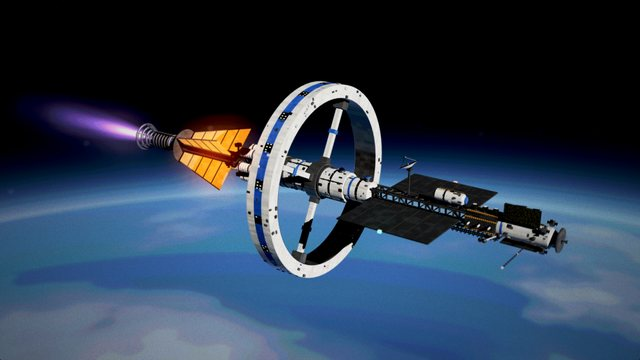
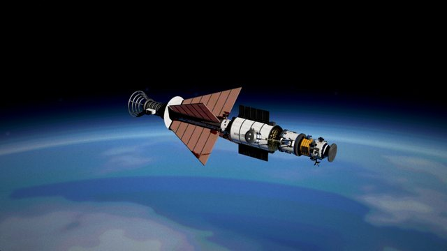
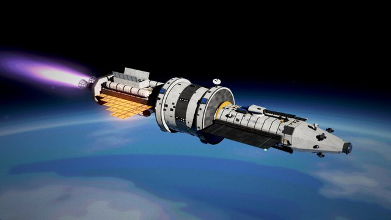
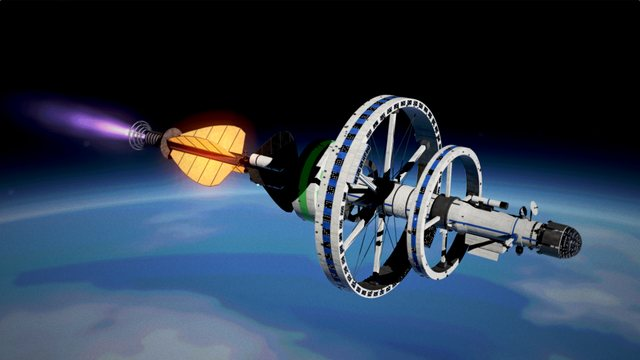

First Mission: Choose Your Ship
“When we start the first mission, the player will decide which ship they are going to use. Based on the ship, the mission is different. If they pick a ship that is meant to colonize the planet, then they will get the colonize mission; if they choose an explorer, or any other ship that doesn’t colonize, they will get a different mission and won’t go to a planet or body.”
A new step in the campaign start lets the player pick one of the six pre-warp ship classes. Horizon and Cochrane carry drop ships and play the colony chain, First Light. The other four never land: each gets its own chain of missions on the helm’s star-system display, built on what the system layer already does (courses, scans, sweeps, satellites, cargo, civilizations).
Flow Where the pick sits
The pick comes before the system, because the ship decides what the system page asks for. A colony ship picks a world to land on (LAND HERE, as today). Any other ship picks the body it starts in orbit of (BEGIN MISSION); every body is allowed, gas giants included, because it never lands. Meridian’s system page only offers systems with a living civilization (REROLL skips the others).
Screen Choose your ship






Tereshkova class
Long-range survey vessel · 310 m · 40 crew · ring 0.6 g
Your mission: The Long Survey. Chart the system body by body, put satellites over the worlds that matter, sweep them for live data and run down a faint signal at the edge of the system.
Never lands. Five missions on the helm’s system display.
Six cards across (three on narrow screens); the selected card opens the detail with a still render, the stats, whether the ship lands, and the start of its chain. The card art is a still from each class page, shipped in the game as game/textures/ships/<id>.jpg.
Ships Which mission each ship gets
Horizon class
Six drop ships land the colony. First Light as it is today, with extra colonists and habitat stock at the start.
Cochrane class
Four drop ships land the colony. First Light as it is today, with extra spare-part kits and a construction rover at the start.
Tereshkova class
Never lands. Charts the system body by body, places satellites, sweeps worlds for live data and chases a faint signal to the edge.
Armstrong class
Never lands. Timed runs between bodies: medicine, mail, a diplomatic pouch. The fastest ship, and the clock is always running.
Bastion class
Never lands. Patrols a route of bodies, inspects civilian traffic, answers a distress call and escorts a freighter home.
Meridian class
Never lands. Finds the system’s living civilization, sets up a listening post, studies them and makes first contact.
Colonize Horizon and Cochrane
Both play First Light exactly as it is today: land the outpost, survey, the Lost Pathfinder, Calling Home, Wings, First Flight, Beyond the Ridge, Foothold. Drop ships stay the decided random A/B/C pick per player. What differs is the start, from the ship’s data:
Horizon
- Extra colonists: +30 crew at landing.
- Habitat stock: +200 duranium.
Cochrane
- Extra spare-part kits at landing.
- A construction rover lands with the colony.
Survey Tereshkova · The Long Survey
- Outbound. Run a long-range scan from the start orbit, then chart two more bodies.
scanned, charted - Eyes Everywhere. Place survey satellites at two different bodies.
system_satellites - Close Look. Sweep a gas giant or an ice body for live data.
bind_body, swept - A Faint Signal. A signal appears at the farthest body. Reach it and sweep it.
place_beacon, ship_at, swept - The Whole Map. Chart every body in the system. Chapter debrief.
charted share 1
Courier Armstrong · Priority Run
- Shakedown. Fly to the farthest planet and back within the time limit.
ship_at, timer - Medicine Run. Pick up vaccine crates at one body and deliver them to another before the timer runs out.
load_cargo, cargo - Mail Circuit. Three parcels for three bodies, any order, one timer.
cargo count - Diplomatic Pouch. Carry a sealed pouch to the outermost moon and hold orbit 30 s.
cargo, ship_at hold - Against the Clock. Two deliveries back to back on a tight timer. Chapter debrief.
cargo, timer
Patrol Bastion · Watch Station
- Patrol Route. Visit three named bodies in order within the time limit.
ship_at stages, timer - Traffic Check. A civilian freighter is named. Meet it in orbit and stay with it 30 s.
bind_ship, with_ship hold - Distress Call. A distress beacon at a body: get there before the timer and sweep the area.
place_beacon, swept - Escort. Shadow a departing freighter: be at its destination when it arrives.
with_ship - Picket. Hold orbit at the outermost body for 120 s and run two scans. Chapter debrief.
ship_at hold, scanned
Diplomacy Meridian · Envoy
- Showing the Flag. Long-range scan, then reach the world with signs of a civilization.
scanned, ship_at civ body - Listening Post. Put an observation post on it.
contact post - Study. Fill the dossier on the species.
contact studied - First Words. Make first contact and choose how.
contact met - Guests Aboard. Hold orbit 60 s while the delegation visits. Chapter debrief.
ship_at hold
Contact uses the existing civilizations system. The Envoy chain allows first contact in Dawn of Warp (the Prime Directive doesn’t exist yet in this era).
Build What changes in the game
Data
data/missions/ship_choice.json: the six ships (id, name, class, role,colonizes,chain, crew, length, travel speed, card, blurb, start bonus).- Four new chains (
long_survey,priority_run,watch_station,envoy) next tofirst_light; new givers for the courier, patrol and envoy desks.
Sim
GameSetup.ShipId→MatchSetup.CreateSystemGame(…, shipId): the flagship is that ship; travel time scales with its speed.- Non-colonizers: landing, outpost drops and drop ships refused (“the Tereshkova can’t land a colony”).
- Space chains run without an uplink. New conditions
ship_at,visited,charted,scanned,swept,system_satellites,cargo,with_ship,contact; actionsbind_body,bind_ship,place_beacon,load_cargo. - Tests: every chain played to the end, twice, same hashes.
Game screens
- Main menu: the Choose Your Ship page with card art.
- System page: LAND HERE for colonizers, BEGIN MISSION (any body) for the rest.
- In game: space ships open on the SYSTEM display, landing and drop pills hidden, the mission tracker on the helm, beacons and cargo on the system plot.
Open Questions for later
- After the chapter. Can a space ship later support a colony (for example, Cochrane resupplying a Horizon colony), or does each campaign stay with its first ship?
- Rewards. Space chains have no outpost to stock. For now they end with a debrief; later they could unlock ships, techs or campaign standing.
- Ship stats. Travel speed differs per ship (Armstrong fastest, Horizon slowest). Should sensors, scan range or satellite count differ too?
- Multiplayer. Each player picks a ship; a colonizer and a space ship in the same system could meet.